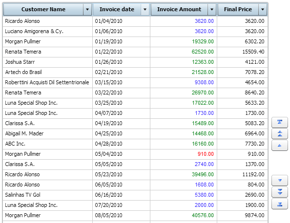

Customizes the output’s appearance depending on whether a certain condition is met. Scope Level: Query element Samples
The following example uses the Invoice query. Apply the following criteria: 1. Mark in red the sales lower than 1000. Select the property cell and click on the magnifying glass icon. The Style dialog window will be opened.
Click on the Insert rule button and the following dialog box will be displayed. This wizard will help you build the rules. In the Combo Box you can select the value “is less than” and in the cell to the right you will type the value 1000. Click on the Change style button to open the Style dialog window; next, click on the Color cell and select red. In this way, you have set the first rule: “Mark in red the sales lower than 1000”. Click again on Insert rule to set the second rule, where the values between 1000 and 9999 must be highlighted in blue; to do so, select the value “is between” in the combo box. A new cell is added to the right to narrow the range. So, in the first cell type 1000 and in the second one we type 9999. Next, we select the color blue, as we did before. For the third rule, select the value “is greater than” from the combo; in the cell to the right, type 9999, and assign the color green. The dialog box must look as shown below. At runtime, the query will look similar to the following image.  |